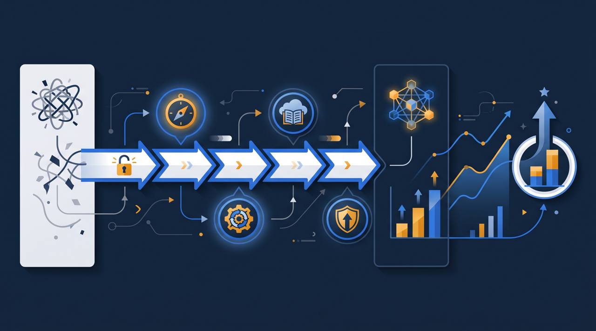
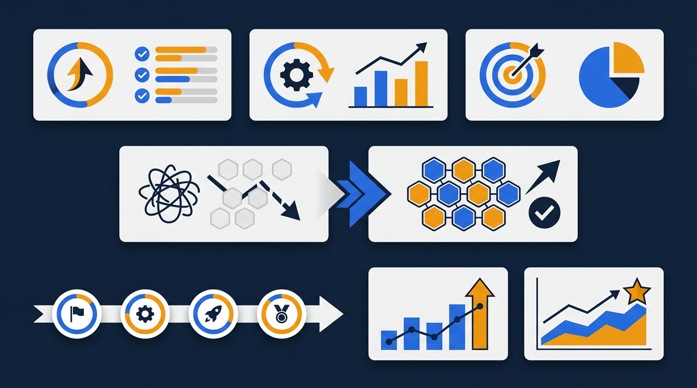
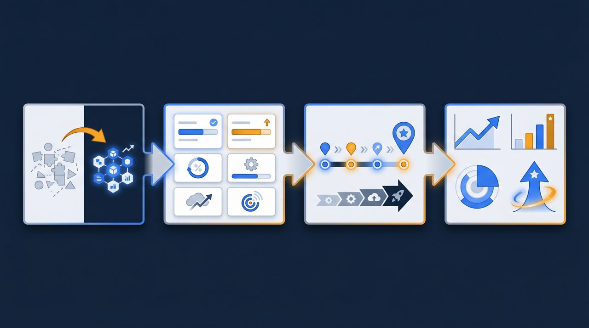

「eラーニングを入れたのに、誰も見ていない」——導入したものの、思ったように使われずに悩む、という話は少なくありません。一方で、設計を工夫して受講率を伸ばし、運用の手間も減らした、という企業もあります。この記事では、eラーニングを導入した企業に、受講率・運用工数・教育の標準化という面でどのような変化が見られることがあるのかを、想定事例として整理します。実在の特定企業の数値ではなく、よくある変化を一般化したモデルとして読んでみてください。

導入前の状況：研修はあるのに、成果が見えなかった
まず、想定する企業の状況を整理します。仮に、小売・サービス業で複数の店舗を持つ、従業員80名規模の会社を思い浮かべてください。この会社では、接客やレジ操作、衛生管理といった基本的な内容を、店舗ごとに先輩が口頭で教える形で研修していました。教育の必要性は誰もが感じていたものの、いくつかの悩みを抱えていたんです。
一つは、店舗によって教える内容や品質がバラついていたこと。教える先輩の経験や得意分野によって、新人が学ぶ範囲が変わってしまう。ある店舗ではしっかり教わるのに、別の店舗では「見て覚えて」で終わる、という差が出ていました。
もう一つは、誰がどこまで学んだのかが分からなかったこと。口頭で教えたことは記録に残らないので、新人がどの内容を理解しているのか、本部からは把握できない。問題が起きてから「そういえば、あの研修はやっていなかった」と気づく、ということもありました。
そこで、基本的な研修内容をeラーニングにして、全店舗で同じ教材を使えるようにしよう、というのがこの会社の出発点でした。ところが、最初の導入では思ったほどうまくいかなかったんです。動画を用意して「見ておいてください」と案内しただけでは、現場はなかなか見てくれませんでした。ここから、どう設計を変えていったのかが、この事例のポイントになります。
少し補足すると、この会社が抱えていた悩みは、教育を軽く見ていたから生まれたわけではありません。むしろ逆で、教育は大事だという思いはあった。だからこそ先輩が時間を割いて新人に教えていたわけです。それでもばらつきや記録の問題が残ったのは、教える熱意があっても、それを支える仕組みがなかったからなんですよね。誰がどこまで教えたかを共有する手段も、教えた内容を揃える基準もない。善意と経験だけで回していたために、人や店舗によって結果が変わってしまった。これは中小企業の現場で、とてもよくある構図だと言えます。だからこそ、熱意を仕組みで支える、という発想が効いてくるわけです。
なぜ「入れただけ」では受講されないのか
eラーニングは、導入すれば自動的に成果が出る、というものではありません。むしろ「入れたのに見られない」という状態は、起こりやすい傾向があります。理由を整理してみましょう。
1. 学習のゴールが見えない
「見ておいてください」とだけ案内されても、どこまで見れば終わりなのか、見たことがどう確認されるのかが分からないと、後回しにされがちです。締め切りも修了の条件もない学習は、忙しい現場では優先順位が下がってしまうんですよね。
2. 受講のハードルが高い
PCでしか見られない、ログインが面倒、1本が長すぎる、といった小さなハードルが積み重なると、受講そのものが億劫になります。とくに現場のスタッフは、まとまった時間にPCを開くこと自体が難しい場合が多いものです。
3. 見たかどうかが管理されていない
誰が見て、誰が見ていないかが把握されていないと、見ない人はそのまま放置されます。未受講のままでも何も起きないなら、人はなかなか動きません。受講状況の可視化と、見ていない人への案内がセットでないと、受講率は伸びにくい傾向があります。経済産業省が示す人的資本経営の考え方でも、人を育てる取り組みは「やった」ことより「身についた」ことを把握する視点が重視されていて、受講の管理はその土台になります。

活用の工夫：受講される設計に作り直した
この会社は、最初の失敗を踏まえて、eラーニングの設計を作り直しました。どう変えたのかを順に見ていきます。
1本を短く区切った
最初は1本20分以上あった動画を、テーマごとに区切って10分前後にしました。短くすると、休憩時間や開店前といったすきま時間に見やすくなります。現場のスタッフが、まとまった時間を取らなくても少しずつ進められるようにしたわけです。
スマートフォンで見られるようにした
PCを開く時間が取りにくい現場のために、スマートフォンやタブレットでも受講できるようにしました。手元の端末で見られるようになると、受講のハードルがぐっと下がります。通勤中や休憩中に進める人も出てきて、受講のきっかけが増えました。
修了の条件と確認テストを設けた
各テーマの後に確認テストを置き、何問以上の正解で修了とするかを決めました。学習のゴールがはっきりすると、「ここまでやれば終わり」という見通しが立ち、取り組みやすくなります。テストに合格して初めて修了になる仕組みにしたことで、見ただけで終わらせず、理解したところまでを確認できるようになりました。
受講状況を可視化し、案内を仕組み化した
学習管理システム（LMS）に載せ、誰がどこまで進んだかを本部から一覧で見られるようにしました。受講が遅れている人へは、仕組みの中から案内を出せるようにした。見ていない人が放置されない状態を作ったわけです。
ここで効いたのは、「見える化」そのものが受講を促す力を持つ、という点でした。誰が見て誰が見ていないかが分かるようになると、店長や本部から自然な声かけが生まれます。「あと一つで修了ですね」と一言かけるだけでも、後回しになっていた人が動き出す。逆に、誰も状況を把握していなければ、見ない人はいつまでも見ないままです。受講状況を可視化することは、単に管理を楽にするだけでなく、人が動くきっかけを作る装置でもあるんですよね。この会社では、店舗ごとの受講の進み具合が並んで見えるようにしたことで、店舗間でほどよい意識が働き、全体の受講が前に進みやすくなった、という面もありました。

見られた変化：受講率・工数・標準化の3つの面
設計を作り直した結果、どのような変化が見られることがあるのかを整理します。なお、ここで挙げる変化は、こうした工夫で起こりやすい傾向を一般化したもので、すべての企業で同じ結果が出ると断定するものではありません。
受講率の面
ゴールを明確にし、スマートフォンで見られるようにし、未受講者へ案内を出すようにすると、受講率が上がる傾向があります。「入れたのに見られない」状態から、「期限までに多くの人が修了している」状態へ近づいていく。受講のハードルを下げ、見ない人を放置しない仕組みを整えたことが効いてくるわけです。1本を短く区切ったことで、すきま時間に進める人が増えた、という変化もよく見られます。
運用工数の面
受講者の案内、出欠の集計、進捗の確認、修了記録の管理といった事務作業が減る傾向があります。これらをLMSが自動で記録するため、紙やExcelで手作業をしていた部分が軽くなる。本部の担当者は、一覧を見て遅れている人に案内を出すだけで、全店舗の受講状況を把握できるようになります。店舗ごとに教える手間も、共通教材を使うことで減っていくわけです。
教育の標準化の面
全員が同じ教材を見るため、店舗や教える先輩によるばらつきが起きにくくなる傾向があります。どの店舗の新人も、同じ内容を同じ品質で学べる。これが新人の到達レベルを揃えることにつながります。ところで、教育の標準化は、サービスの質を全店舗で一定に保つことにも効いてきますよね。お客様から見たときの「店によって対応が違う」という事態を減らすことにもつながっていきます。
一方で、教材を作り、学習設計を整える最初の手間はかかります。ここは正直にお伝えしておく点です。短く区切る、テストを用意する、スマホ対応にするといった作り込みには時間が必要です。ただ、一度整えれば、新しく人が入るたびに同じ品質の教育を自動で届けられるため、長い目で見ると手間の総量は減ることが多い傾向があります。なお、こうした教材制作や学習環境の整備には、人材開発支援助成金のように研修費用の一部を助成する制度を活用できる場合があり、最新の案内を確認しながら検討する価値があります。
集合研修とeラーニング、どう使い分けたか
この会社は、すべての教育をeラーニングに置き換えたわけではありません。ここも大切なポイントです。
eラーニングに向いていたのは、知識を伝える座学の部分でした。接客の基本やレジ操作の手順、衛生管理のルールといった、内容が決まっていて繰り返し伝える必要があるものは、動画と確認テストで効率よく学べます。一方で、実際の接客の練習や、店舗ごとの事情に合わせた応用、スタッフ同士で意見を出し合う場面は、対面のほうが向いていました。その場のやり取りや、手を動かしての練習は、動画だけでは補いきれない部分があるからです。
そこでこの会社は、知識の習得はeラーニングで、実技や応用は店舗での指導で、という役割分担に落ち着きました。新人はまずeラーニングで基本を学び、共通の土台ができた状態で店舗の実地指導に入る。先輩は、基本の説明を毎回繰り返す必要がなくなった分、その人の動きを見ながらの実践的な指導に集中できる。どちらが優れているという話ではなく、向く内容が違うものを組み合わせた、というわけです。
この「組み合わせる」という発想は、eラーニングを導入する多くの会社にとって現実的な落としどころになります。全部をオンラインにしようとすると、対面でしか得られない学びや交流が失われることがあります。逆に、せっかくの仕組みを使わずに従来通り全部を対面で続ければ、ばらつきや負担はそのまま残ります。座学はオンライン、実技と応用は対面、という線引きを、自社の研修内容に当てはめて考えてみると、無理のない使い分けが見えてくるはずですよね。
この事例から学べること
最後に、この想定事例から、自社で取り組む際のヒントを整理します。
一つめは、「導入」と「活用」を分けて考えること。eラーニングは入れただけでは成果につながりにくく、受講される設計に作り込んで初めて効いてきます。動画を用意して終わりにせず、短く区切る、スマホ対応にする、ゴールを明確にする、案内を仕組み化する、という活用の工夫まで含めて設計することが大切です。
二つめは、最初からうまくいかなくても作り直せばよいこと。この会社も、最初の導入では受講が進みませんでした。けれど、なぜ見られないのかを整理し、設計を作り直したことで変化が生まれた。一度で完璧を目指すより、使いながら直していく前提で進めるほうが、現実的で定着しやすい傾向があります。
三つめは、受講の管理を仕組みに任せること。誰がどこまで学んだかを人の目で追うのは、店舗数や人数が増えるほど現実的でなくなります。受講状況を可視化し、案内を自動化する仕組みに載せておけば、教育を「やりっぱなし」にせず、身についたところまで把握できます。
そして忘れたくないのが、こうした取り組みが一度きりで終わるものではない、という点です。受講率や理解度を定期的に振り返り、つまずきが多い箇所の教材を見直したり、新しい内容を足したりしていくと、eラーニングは使うほどに自社になじんでいきます。導入はゴールではなく、教育を育てていく出発点なんですよね。受講率が伸びず悩んでいる会社こそ、まずは1本を短く区切り、スマートフォンで見られるようにするところから、設計を見直してみてはいかがでしょうか。小さな作り直しの積み重ねが、見られるeラーニングへの近道になります。
よくある質問
導入しただけで自然に上がるとは限りません。むしろ「入れたのに見られない」という状態は起こりやすい傾向があります。受講率を上げるには、1本を短く区切る、スマートフォンで見られるようにする、修了の条件を明確にする、未受講者に案内を出す、といった学習設計の工夫がセットで必要になります。
受講者の案内、出欠の集計、進捗の確認、修了記録の管理といった事務作業が減る傾向があります。学習管理システム（LMS）がこれらを自動で記録するため、紙やExcelで手作業をしていた部分が大きく軽くなります。一方、教材を作り、学習設計を整える最初の手間はかかります。
どちらが優れているという話ではなく、向く内容が違うと捉えるほうが現実的です。知識を伝える座学はeラーニングに向き、その場のやり取りや実技、交流が必要なものは対面に向きます。両方を組み合わせるブレンド型で、それぞれの良さを活かす企業が多い傾向があります。
全員が同じ教材を見るため、教える人や開催回による内容のばらつきが起きにくくなるためです。集合研修では講師によって説明の仕方や強調点が変わりがちですが、eラーニングなら基準となる内容を全員に同じ品質で届けられます。これが新人の到達レベルを揃えることにつながりやすくなります。
スマートフォンやタブレットで受講できるようにすると、PCを開く時間が取りにくい現場スタッフでも、すきま時間に学びやすくなります。1本を短く区切っておくと、休憩時間や移動中といった細切れの時間でも進めやすく、受講率の向上につながりやすい傾向があります。
研修の内容や進め方によっては、人材開発支援助成金のように、訓練にかかった経費や賃金の一部を助成する制度を活用できる場合があります。対象となる訓練の要件や助成の条件は変わることがあるため、最新の公募要領や厚生労働省の案内を確認したうえで検討することをおすすめします。